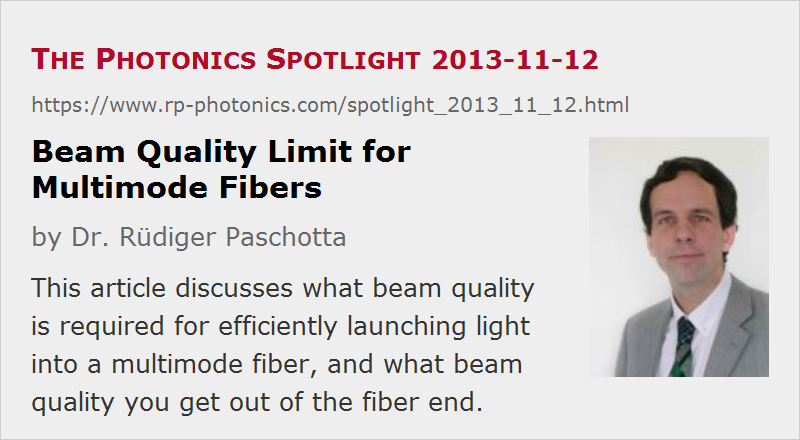

Beam Quality Limit for Multimode Fibers
Posted on 2013-11-12 as a part of the Photonics Spotlight (available as e-mail newsletter!)
Permanent link: https://www.rp-photonics.com/spotlight_2013_11_12.html
Author: Dr. Rüdiger Paschotta, RP Photonics Consulting GmbH
Abstract: This article discusses what beam quality is required for efficiently launching light into a multimode fiber, and what beam quality you get out of the fiber end.

Laser beams from multimode laser diodes often need to be launched into some multimode fibers. Frequently encountered question in that context are:
- How good does the beam quality of my light source have to be – for example in terms of the M2 factor – for efficient launching into the fiber?
- What will be the beam quality of the light coming out of the fiber?
Surprisingly, it is not so easy to find helpful and reliable advice on such essential things on the Internet or in textbooks, but this is what I will try to provide in the following.
Clearly, the input light to the fiber should essentially be limited to the region of the fiber core; we don't want to launch light into the cladding. In addition, the angular distribution needs to be limited according to the numerical aperture of the fiber. Can we now calculate the maximum M2 factor of the fiber input or output from these two conditions?
Strictly speaking, we can't – basically because these two values do not determine the details of the beam intensity profile. However, one may assume that the optical power is well spread over all the guided modes of the fiber. For that case, one can show that the M2 factor of the output can be well estimated by the equation
where rcore is the core radius, NA the numerical aperture, and λ the vacuum wavelength. (In case you don't see the equation, please make sure that images are displayed.) I have confirmed this with some numerical tests.
As the high-order modes contribute more to a high M2 value than the low-order ones, reality might be worse than according to the equation, if one preferentially launches into high-order modes. However, that is unlikely in typical practical cases. One will then usually not obtain more than the calculated limit, or even less.
The maximum M2 factor of the input light (for efficient launching) can be estimated with the same equation, but again, it is an estimate, which is often very reasonable, but not a strict limit.
The figure below shows the intensity profile of a monochromatic beam from a numerical simulation, where the power is well spread over all guided modes.
Note that much smoother intensity profiles are possible for polychromatic light, where different wavelength components have similar intensity patterns as shown above, but the minima and maxima of different components largely average out. That averaging effect has not impact on the beam quality, however.
Will the Output Beam Quality be the same as that of the Input?
From a simple picture, one might expect that the M2 value for the output of the fiber should be the same as for the input. That is not always true, however:
- If some of the launched light is “stripped off” by the fiber, i.e., lost in the cladding, the output beam quality might be better. The fiber then acts as a kind of spatial filter.
- If you launch primarily into low-order modes, using a light source with good beam quality, you may also get that good beam quality from the fiber end. However, there might also be some mode mixing in the fiber, e.g. as a result of bending. That may shuffle light into higher-order modes, leading to a higher M2 value.
- If you do not illuminate the whole area of the fiber core at the input, you will nevertheless get light from essentially the whole core area at the output. The increased beam area together with the usually not decreased beam divergence leads to a higher M2 value.
How About Few-mode Fibers and Single-mode Fibers?
Numerical tests which I did with my RP Fiber Power software showed that the quoted limit becomes inaccurate for fibers with only few guided modes, and of course for single-mode fibers.
In the latter case, the angular distribution for the guided mode normally remains well below the limit calculated from the numerical aperture. In other words, one can construct light beams which would reasonably well fulfill the condition of a maximum angular spread, and nevertheless cannot be efficiently launched into the fiber.
A nice example is that of a TEM10 beam, which is well aligned to the fiber and has a reasonable beam radius. Although only some small fraction of its angular distribution is outside the limit set by the fiber's NA, the launch efficiency is zero. That already follows from symmetry reasons: the overlap with the single guided fiber mode is zero, since that mode is radially symmetric, whereas the TEM10 beam is anti-symmetric. Curiously, some of the light can be launched if the center of the TEM10 beam is somewhat offset against the fiber axis – although that misalignment surely does not modify the angular distribution.
You may also gradually increase the core diameter and/or the NA, and suddenly you will reach a point where a substantial part of the power of the TEM10 beam can be launched into the fiber core.
So the wave optics details become more subtle for single-mode and few-mode fibers, even though simple estimates as provided above generally work well for fibers with many modes, where we nearly have a continuum of modes.
Fiber Optics Tutorial
You find such things and more in our tutorial on fiber optics, in particular in its section 4 on multimode fibers. I have worked hard to provide more substance, particularly concerning the physics, than the dozens of other fiber optics tutorials which you can find on the Internet.
I hope you will agree that our newsletter and our tutorials provide useful high-quality information, and that you can recommend them to your colleagues – possible also using your website and social media.
This article is a posting of the Photonics Spotlight, authored by Dr. Rüdiger Paschotta. You may link to this page and cite it, because its location is permanent. See also the RP Photonics Encyclopedia.
Note that you can also receive the articles in the form of a newsletter or with an RSS feed.
Questions and Comments from Users
Here you can submit questions and comments. As far as they get accepted by the author, they will appear above this paragraph together with the author’s answer. The author will decide on acceptance based on certain criteria. Essentially, the issue must be of sufficiently broad interest.
Please do not enter personal data here; we would otherwise delete it soon. (See also our privacy declaration.) If you wish to receive personal feedback or consultancy from the author, please contact him e.g. via e-mail.
By submitting the information, you give your consent to the potential publication of your inputs on our website according to our rules. (If you later retract your consent, we will delete those inputs.) As your inputs are first reviewed by the author, they may be published with some delay.
|  |
If you like this page, please share the link with your friends and colleagues, e.g. via social media:
These sharing buttons are implemented in a privacy-friendly way!